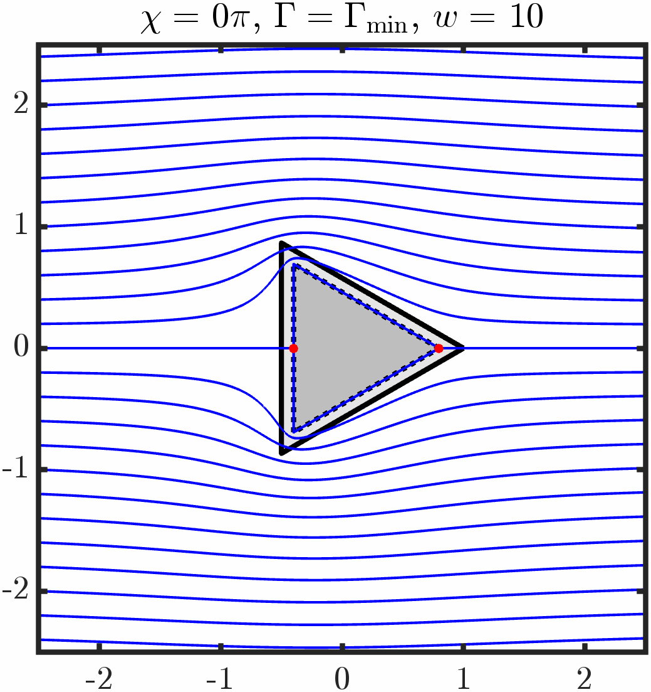
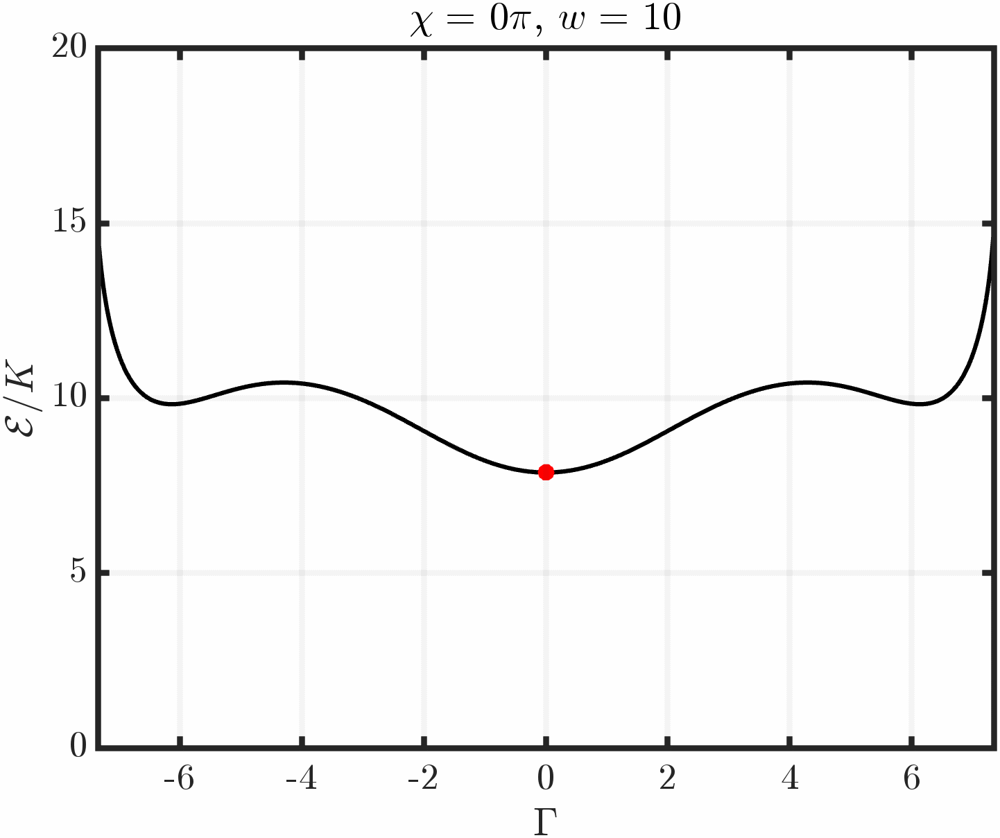

Animations of two-dimensional nematic liquid crystals
All solutions plotted below were derived using the complex variable formulation and effective boundary technique found in our recent publications:
- Chandler, T. G. J. & Spagnolie, S. E., 2024. Deformable bodies in active nematics. DFD-interact poster presented at APS DFD 2024.
- Chandler, T. G. J. & Spagnolie, S. E., 2024. Fluid–body interactions in elastic anisotropic fluids. Poster presented at Fluid and Elasticity 2024.
- Chandler, T. G. J., Spagnolie, S. E., 2024 (submitted). Active nematic response to a deformable body or boundary: surface deformations and anchoring-induced flow. arXiv:2409.15617.
- Chandler, T. G. J. & Spagnolie, S. E., 2024. Rigid and deformable bodies in nematic liquid crystals. Phys. Rev. Fluids 9, 110511. doi:10.1103/PhysRevFluids.9.110511.
- Chandler, T. G. J. & Spagnolie, S. E., 2024 (in press). Exact and approximate solutions for elastic interactions in a nematic liquid crystal. SIAM J. Appl. Math. arXiv:2311.17708
- Chandler, T. G. J. & Spagnolie, S. E., 2023. A nematic liquid crystal with an immersed body: equilibrium, stress, and paradox. J. Fluid Mech. 967, A19. arXiv:2301.10924.
Example 1: Immersed cylinder with tangential anchoring
Varying period/circulation

Varying anchoring strength

Example 2: Immersed triangle with tangential anchoring
Varying period/circulation

Varying Triangle Orientation
 
Example 4: Other boundary conditions
Janus Particle

Defect Particle


Example 5: Two cylinders with tangential anchoring
Quasi-stable evolution


Example 6: Two triangles with tangential anchoring
Quasi-stable evolution


Example 7: Confined active nematic with tangential anchoring
Spontaneous Stirring

Example 8: Soft cylinder in active nematic with tangential anchoring
Varying anchoring strength

Varying activity strength